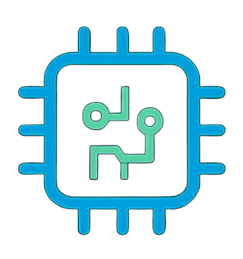

Servicio Técnico
Soluciones profesionales para tu hardware y software
Soluciones profesionales para optimizar el rendimiento de tu equipo.
Especialista en componentes:
Reparaciones de alta precisión y micro-soldadura para dispositivos móviles.
Garantía Escrita
Todos nuestros trabajos tienen respaldo.
Repuestos Originales
Solo usamos componentes de primera calidad.
Rapidez
Diagnóstico en 24/48hs hábiles.